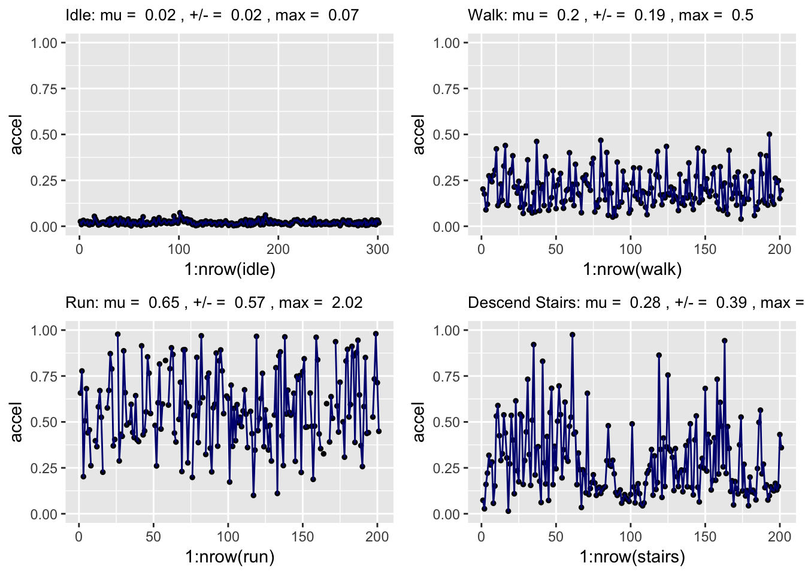

Chapter 4 Exploratory Data Analysis
4.1 Visually Detecting Patterns
Mobile technologies have lowered the bar to using lightweight sensors that measure the physical world and have opened new applications of data in daily life. From a smart phone’s accelerometer, it’s possible to track distinct patterns in one’s activity based on the fluctuations in acceleration (\(\frac{m}{s^{2}}\)). In fact, many of these technologies have become commonly available, enabling physical fitness activity monitoring to characterizing transportation quality. Below is a set of exercise measurements from an smartphone accelerometer that lasted approximately 6.5 minutes and graphed at a frequency of 5 hertz (five readings per second).
Can you visually identify distinct patterns? What makes those patterns distinct?
Figure 4.1: Net acceleration collected from a mobile phone, sampled at a rate of 5 hertz (readings per second).
Over the short time sample, the graphs indicate four distinct types of acceleration patterns. If we manually extract samples from these periods, we can quantify the patterns in terms of their central tendencies. Idle periods have near zero acceleration, walking periods have acceleration around 0.2 with tight dispersion, running periods hover around 0.6 +/- 0.2, and descending stairs vary widely. Given how these basic insights, we can experiment with various methods of feature engineering, or ways to distill and represent useful signal from the raw data. We can also begin to formulate hypotheses for how to model and represent the patterns and relationships in the data.

This is the basis of exploratory data analysis or EDA – the first look at a dataset. Much of exploratory data analysis is focused on formulating hypotheses, assessing data structures, and understanding the quirks and tolerances of data in order to develop useful and insightful data-driven applications. This is achieved by using visual techniques (e.g. histograms, other graphs) to identify outliers and assess the distribution of variables as well as statistical measures help to understand central tendency among other properties of the data. A well-conducted EDA would yield critical insights into how the data can and should be processed, methods for feature extraction to represent usable signal in the data, and options for operationalizing a strategy for solving the problem at hand.
We can break EDA into a series of high-level goals, each of which is associated with analytical tasks that help piece together a clearer picture of what is contained in the data. Each of these questions can be answered through a graphical or numerical technical approach.
| Goal | Common Questions |
|---|---|
| Assess the data types | - Are the data categorical, numerical, factor, strings, other? - What manipulations will you need to perform to get the data into usable shape? |
| Understand the empirical distributions | - Does the data fall into a commonly recognized shape? - Is it unimodal, bimodal? - Is there any indication of time-dependence? |
| Detect outliers, missingness and errors | - Are there anomalous values? - Do records spike or occur during odd times? - How complete is the data? - Which variables need to be standardized and cleaned? |
| Check the assumptions | - How exactly is the data collected? - Does the data reflect what would be expected? |
| Identify important variables | -Which variables are correlated with one another? |
| Formulate data-bounded hypotheses | - Which variables are most correlated? |
This chapter will equip you with the skills to explore the data in an efficient and thoughtful manner. There are three considerations that underlie effective discovery: data structure, statistical measures, and graphical summaries. We begin with an overview of elements of EDA, then reinforce by walking through an example workflow.
4.2 How does this work?
The structure of the data dictates the amount and type of processing required to make data usable and wieldy. Typically, data should be in matrix or tabular form – a basic requirement for data to be manipulated and analyzed. However, at times, the raw data may be in an unstructured format (e.g. raw text) or in different structured formats (e.g. satellite imagery, long form), requiring processing, reshaping and/or feature extraction so that the data is usable.
4.2.0.1 Where to start
To start, we’ll create a simulated dataset, containing five variables: sex, age, weight, program, and status.
num_recs <- 1200
long = expand.grid(seq(1,num_recs,1), c("sex","age", "weight", "program", "status"))
colnames(long) <- c("person_id", "field")
long$values <- c( round(runif(num_recs)),
round(rnorm(num_recs,40,10)),
sample(c(rep(-9999, num_recs), round(rnorm(num_recs,120,20))),num_recs),
rep(c("a","b"),num_recs/2),
rep(c("in",NA,"out"),num_recs/3))
long <- long[order(long$person_id),]
head(long, 10)## person_id field values
## 1 1 sex 0
## 1201 1 age 43
## 2401 1 weight 101
## 3601 1 program a
## 4801 1 status in
## 2 2 sex 1
## 1202 2 age 42
## 2402 2 weight 98
## 3602 2 program b
## 4802 2 status <NA>Using the str() method (below), we can produce a structural summary of each variable in a dataset. There are a few common things to keep in mind:
- Is the data in the right shape?. The data is ‘stacked’ or in ‘long’ form, which means that each row contains a value (
values) that corresponds to a person-variable combination (person_idandfield). Notice that while there are numeric and character values, all variables are coded as characters. In order to analyze the data, each field should be represented in a separate column. This process is known as reshaping from long to wide form and is pre-requisite. - Are there discrete variables that are coded as integers?. Numeric codes often are used in order to keep the data files smaller. For example,
sexis coded as a binary integer, but represents two values: 0 = Female, 1 = Male. In some case, it may be helpful to recode using the text value for ease of interpretation - Are there missing values?. Missing values are often coded as
NAor a large negative number in cases where values should be non-zero positive such as-9999. This will require some cleaning to standardize values and at times imputation. - Which variables should be numeric?. At times, numeric variables will be formatted as strings and factors.
str(long)## 'data.frame': 6000 obs. of 3 variables:
## $ person_id: num 1 1 1 1 1 2 2 2 2 2 ...
## $ field : Factor w/ 5 levels "sex","age","weight",..: 1 2 3 4 5 1 2 3 4 5 ...
## $ values : chr "0" "43" "101" "a" ...
## - attr(*, "out.attrs")=List of 2
## ..$ dim : int 1200 5
## ..$ dimnames:List of 2
## .. ..$ Var1: chr "Var1= 1" "Var1= 2" "Var1= 3" "Var1= 4" ...
## .. ..$ Var2: chr "Var2=sex" "Var2=age" "Var2=weight" "Var2=program" ...4.2.0.2 Example of structural fixes
Data should be in wide form. To do so, we can rely on the reshape() method to create a column for each of the field variables.
head(long)## person_id field values
## 1 1 sex 0
## 1201 1 age 43
## 2401 1 weight 101
## 3601 1 program a
## 4801 1 status in
## 2 2 sex 1wide <- reshape(long, idvar = c("person_id"), timevar="field", direction="wide")
head(wide)## person_id values.sex values.age values.weight values.program
## 1 1 0 43 101 a
## 2 2 1 42 98 b
## 3 3 0 46 108 a
## 4 4 0 36 165 b
## 5 5 1 49 97 a
## 6 6 1 32 -9999 b
## values.status
## 1 in
## 2 <NA>
## 3 out
## 4 in
## 5 <NA>
## 6 outWhen using colnames(), we can see that the reshaped dataset contains “values.” as a prefix. For conciseness, we’ll remove the prefix using gsub() to replace the string pattern with “” or blank.
#get column names
colnames(wide)## [1] "person_id" "values.sex" "values.age" "values.weight"
## [5] "values.program" "values.status"#rename by removing "values."
colnames(wide) <- gsub("values.","",colnames(wide))
#get column names
colnames(wide)## [1] "person_id" "sex" "age" "weight" "program" "status"Lastly, variables should be recoded and reformatted into the appropriate format. These basic fixes help ensure the usability of the dataset.
#re-code sex
wide$sex[wide$sex == "1"] <- "male"
wide$sex[wide$sex == "0"] <- "female"
#Character to numeric
wide$age <- as.numeric(wide$age)
wide$weight <- as.numeric(wide$weight)
#Recode -9999 to NA
wide$weight[wide$weight == -9999] <- NA4.3 Univariate data analysis
The tools and techniques used to analyze can be distinguished into univariate (concerning one data series at a time) or multivariate (concerning two or more data series at a time). To start, we will focus on univariate techniques, starting with statistics, then moving into graphical methods.
4.3.1 Statistics for continuous variables
The shape and properties of a continous variables will vary greatly. These moments, or common attributes of data, should influence how an analyst will treat the data. Four continuous distributions are plotted below:
- The first graph looks similar to a box, indicating that there is an equal chance that a value can take on any value between 0 and 1.
- The second graph follows a bell curve ( also known as a ‘normal distribution’ or ‘Gaussian distribution’) with a central peak and symmetrical tails.
- The third graph peaks to the left with a longer tail to the right.
- The fourth graph peaks to the right with a longer tail to the left.
While graphical techniques are useful, and are the topic of the next section in this chapter, sample statistics can concisely summarize the contents of data in a way that are insightful and comparable.
Figure 4.2: Histograms with distributions of varying shapes
How can we quantitatively tell these variables apart? Sample statistics are particularly helpful with characterizing central tendency, spread, skewness and kurtosis.
4.3.1.1 Central tendency
Data with any amount of signal typically tends towards a central value or location. This means that values will peak or cluster around a central point, but need not be symmetrically distributed around that central point. There are two common measures that are used to characterize central tendency: the mean and the median.
The mean, also known as the arithmetic mean or average, is simply the sum of all values in x divided by the sample size n. Since the calculation takes into account all values in x, means are sensitive to outliers and extreme values. Often times, the mean is the main statistic used to describe what is typical of a sample or population as it is considered to be the expected value. For example:
- Average age of a cohort entering graduate school
- Average speed of vehicles traveling down a highway segment
- Average number of days to close a complaint
The median or P50 is also used as a method of indicate central tendency based on indexed position in a variable. It is computed as the 50th percentile value: sort all values from lowest to highest, then find the value at the \((\frac{n+1}{2})^{th}\) position. Essentially, the median is denotes the position at which 50% of values are above and below. Medians are robust to outliers, meaning that the change in the magnitude of values above or below the 50th percentile point may change, but the median may stay the same.
| Measure | Formula | Definition | When to use | R Function | Example |
|---|---|---|---|---|---|
| Mean or Average | \[ \mu = \frac{1}{n} \sum_{i=1}^{n} x_i\] | A measure of central tendency formulated as the sum of all values. Also known as the ‘expected value’. | The general de facto choice | mean() | mean(c(1,3,5,7,9)) = 5 |
| Median | Value at \[(\frac{n+1}{2})^{th} \] position | A measure of central tendency based on the ‘middle value’ or 50th percentile of a random variable. | When data appears to be skewed or asymmetrical | median() | median(c(1,3,5,7,9)) = 5 |
Typically, it’s helpful to consider and compare both median and mean values as they provide context. Revisiting the four distributions, we can compare the means and medians. In graphs 1 and 2, the distributions are symmetrical, thus one would expect the mean to be approximately equal to the mean. In graph 3, the longer tail to the right pulls the mean above the median, whereas in graph 4, the left tail pulls the mean below the median.
Figure 4.3: Histograms with distributions of varying shapes
4.3.1.2 Spread
Just as important as central tendency is the spread or dispersion, or measures that gauge the variability of data relative to a central point. There are a number of measures that commonly are focused upon, such as variance and the interquartile range, and all help piece together a comprehensive understanding of a given data series.
Perhaps the simplest measures are those that are based on positions of records. The minimum and maximum are the smallest and largest values of a continuous variable. The minimum and maximum are also known as the P0 and P100. The arithmetic difference between those values is the range. Similar to the range is the Interquartile Range or IQR, which is the arithmetic difference in values between the P75 and P25. Examining the IQR gives a sense of the density of the center mass of a distribution, or the middle 50%. Together, these basic measures can contextualize the shape and density of a variable, especially comparing between subpopulations. For example, the income range of group A is $100,000 and group B is $2,000,000, indicating that the top and bottom of group A are closely distributed whereas there are large outliers in group B.
In addition, the variance of a data series contains key information about variability around the mean. Variance is defined as the average squared difference between each value of a series and its mean. The differences are squared in order to (1) preserve the information as simply adding the differences would net to zero, (2) emphasize differences from the mean. While the variance is a key part of statistics, it’s not particularly interpretable without some additional transformations. The standard deviation is the square-root of the variance, which has the same units as the original data and can be used to contextualize dispersion of data relative to the mean. In fact, standard deviations are used as a unit of analysis. Under a normal distribution using the mean as a point of reference, +/- 1.96 standard deviations should contain 95% of records and +/- 3 standard deviations should contain 99.7% of records. These benchmarks are commonly used to identify outliers.
| Measure | Formula | Definition | R Function | Example |
|---|---|---|---|---|
| Minimum | \(\operatorname{argmin}(x_i)\) | The smallest value of a random variable. | min() | min(c(1,3,5,7,9)) |
| Maximum | \(\operatorname{argmax}(x_i)\) | The largest value of a random variable. | max() | max(c(1,3,5,7,9)) |
| Range | \(\operatorname{argmax}(x_i) - \operatorname{argmin}(x_i)\) | Difference of its largest and smallest data values | range() | range(c(1,3,5,7,9)) |
| IQR | P75 - P50 | Difference of the 75th percentile and 25th percentile value | IQR() | IQR(c(1,3,5,7,9)) |
| Variance | \(s^2 = \frac{1}{n} \sum_{i=1}^{n} (x_i-\mu)^2\) | A measure of dispersion around the mean. | var() | var(c(1,3,5,7,9)) |
| Standard Deviation | \(s = \sqrt{\frac{1}{n} \sum_{i=1}^{n} (x_i-\mu)^2}\) | The square root of the variance. | sd() | sd(c(1,3,5,7,9)) |
4.3.1.3 Skewness + Kurtosis
| Measure | Formula | Definition | R Function | Example |
|---|---|---|---|---|
| Skewness | \(\mu = \frac{1}{n} \sum_{i=1}^{n} x_i\) | Measure of symmetry | library(e1071) kurtosis() |
example |
| Kurosis | \(\mu = \frac{1}{n} \sum_{i=1}^{n} x_i\) | Measure of peakedness relative to Gaussian distribution | library(e1071) skewness() |
example |
4.3.2 Graphical Approaches
While sample statistics help to determine expected values and overall trends of continuous variables, graphical and visual approaches help to identify unexpected values – where are there outliers and unusual quirks of the data.
4.3.2.0.1 Histograms and kernel density graphs
The most commonly used graph to visualize univariate data is the histogram. Essentially, histograms will break a continuous variable into equal sized bins based on the range of values, then graph the number of observations in each bin. This practice of binning or discretizing add a second dimension to a continuous variable that is needed to visualize patterns. Typically the number of bins is determined automatically when using functions such as hist().
While normal distributions are the best known probability distribution, a pure normal distribution is fairly rare in the wild. In social data, it’s more common to see long tails as seen below. Thus, data is often times transformed using mathematical functions in order to reshape the distribution of values. For data with large peaks to the left and long tails, common transformations include the natural logarithm (log()), logarithm base 2 (log2()) or logarithm base 10 (log10()). In the graph below, we use the log10() transformation to stretch the data to the right so that it is more normally or symmetrically distributed.
#Set up format
par(mfrow=c(1,2))
#Basic histogram
hist(df$WAGP, main = "Wages")
hist(log10(df$WAGP), main = "log10(Wage)")Figure 4.4: Two histograms - wages and log(wages)
The hist() function provides rudimentary stylings for histograms. For more advanced stylings, the ggplot2 library offers more convenient and easier to use stylistic options. In the example below, the log10 transformation is applied using scale_x_log10().
ggplot(df, aes(WAGP)) +
ggtitle("Histogram") + geom_histogram(colour = "white", fill = "navy") +
labs(x = "log10(Wage)") +
scale_x_log10()Figure 4.5: Histogram of Log(Wage)
An alternative to histograms is the kernel density plot, which applies a technique known as kernel-density estimation as opposed to binning. Using ggplot2, we can apply the geom_density() argument to use the kernel density plot. The plot is notably smoother and organic when compared to histograms.
#K-density
ggplot(df, aes(WAGP)) +
ggtitle("Kernel Density") +
geom_density(colour = "white", fill = "navy") +
labs(x = "log10(Wage)") +
scale_x_log10()Figure 4.6: Kernel Density Plot
Both histograms and kernel density graphs are helpful for developing a notional understanding of the shape of data. Due to binning, the individual bins of a histograms correspond to an actual number of observations whereas kernel densities can be used to illustrate the organic shape of the distribution. However, neither provide quantitative benchmarks such as the mean or quantiles.
4.4 Multivariate Data
Much of data analysis focuses on the possibilities of combining two or more data series in order to uncover relationships and patterns as well as inform modeling hypotheses. In this section, we will focus on using correlation statistics and bivariate graphs to identify patterns.
4.4.0.1 Correlation of continuous variables
In everyday rhetoric, the term correlation is relatively loosely used. In statistics, it commonly has a specific definition, specifically, the Pearson Product-Moment Correlation Coefficient or Correlation Coefficient for short – a measure of relatedness. It is defined as:
\[\rho(X,Y) = \frac{cov(X,Y)}{\sigma{_X}\sigma{_Y}} \]
where \(\rho\) denotes the correlation coefficient, cov is the covariance of two variables (X and Y) as defined as \((X - \mu_X)(Y - \mu_Y)\), and \(\sigma\) is the standard deviation of each X and Y. The correlation coefficient is bound between -1 and 1, where:
- -1 indicates perfectly negative linear relationship (as X increases, Y decreases proportionally)
- 0 indicates no relationship (X and Y are not related)
- +1 indicates perfectly positive linear relationship (as X increases, Y increases proportionally)
Figure 4.7: Varying Degrees of Correlation
In practice, it’s fairly simply to calculate and explore relationships by using cor(). For example, what if we were to compare age (AGEP) with retirement income (RETP). Notice that we use the complete.obs option to use only records that have values for both AGEP and RETP. The correlation coefficient is +0.226 indicating only a slight correlation.
cor(df$AGEP, df$RETP, use = "complete.obs")## [1] 0.2262218How do we examine a much broader set of variables such as WAGP - wage income, PERNP - personal income, RETP - retirement income, SSIP - supplemental security income, PAP - public assistance income, SEMP - self-employment income, and OIP - all other income. The cor() function can accept a dataframe or matrix of continuous variables and outputs a k x k matrix of pairwise correlation coefficients. The diagonal will always be filled with 1 as a correlation of a variable with itself will be the highest possible value. Values above the diagonal are identical to values below.
select <- df[, c("AGEP", "WAGP", "PERNP", "SEMP")]
cor(select, use = "complete.obs")## AGEP WAGP PERNP SEMP
## AGEP 1.00000000 -0.11366644 -0.09416775 0.02141612
## WAGP -0.11366644 1.00000000 0.91511883 0.02645639
## PERNP -0.09416775 0.91511883 1.00000000 0.42725385
## SEMP 0.02141612 0.02645639 0.42725385 1.00000000The correlation matrix may be a bit overwhelming to decipher. We may use the corrplot package to visualize the size of correlations. In this case, we can see that the strongest correlations are PERNP, WAGP, and SEMP.
library(corrplot)
M <- cor(select, use = "complete.obs")
corrplot(M, method = "ellipse")Figure 4.8: Correlation plot
4.4.0.2 Bivariate plots: continuous vs continuous
The simplest bivariate graph is the scatter plot, which graphs points placing one variable on the horizontal axis and another on the vertical axis. The intersection of the values fall on a two-dimensional canvas, exposing relationships between variables. Below, a simple scatter plot shows the non-linear relationship between log-transformed personal income and age, suggesting that wages may reach a ceiling as one gets older.
plot(df$AGEP, log10(df$PERNP), cex = 0.5)Figure 4.9: Scatter plot of age and log(personal income)
In data science, often times, the amount of the data will push the limits of traditional graphs and require more stylized ways to derive empirical insight:
Graph (a) plots a traditional scatter plot with much of the plot saturated with points. This is generally good when strong linear trends are present or with relatively few data points.
Graph (b) is another scatter plot with an adjusted
alpha, also known as opacity. In graphs, changing the opacity in a graph without any overlapping points makes the entire image look faint. In cases where points overlap, the opacity values add up, thereby darkening areas with overlapping points. This style is particularly useful when there is a high volume of points.Graph (c) is a scatter plot, but uses a locally weighted smoother to show the direction of local relationships and the variability around the trend line. This style can be used to find candidate transformations and non-linear specifications for the modeling phase.
Graph (d) is a hexbin plot, which converts a graphical canvas into equal hexagonal bins, counts the number of values in each discrete bin and color codes based on the counts. This style is particularly useful when there is a high volume of points.
Graph (e) is a contour graph that bins the graph into distinct regions where concentric regions towards the middle are larger values. This is useful for geographic or spatial data, particulary for terrain data.
#Base data for plot
p = ggplot(df,aes(x=AGEP,y=log10(PERNP))) +
xlab("Age") +
ylab("log(earnings)")
##Scatter plot
p1 = p + geom_point(size = 0.2) +
ggtitle("(a) traditional scatter")
##Scatter plot with transparency
p2 = p + geom_point(alpha = 0.1, colour="navy", size = 0.2) +
theme_bw() +
ggtitle("(b) scatter (alpha = 0.1)")
#Scatter plot with regression line (locally weighted smoother)
p3 = p + ggtitle("(c) scatter + regression line")+
geom_point(alpha = 0.1, colour="navy",size = 1) +
geom_smooth() + xlab("Age") + ylab("log(earnings)")
##Hexbin
p4 = p + stat_bin_hex(colour = "white", na.rm = TRUE, alpha = 0.9) +
scale_fill_gradientn(colours=c("lightgrey","navy"), name = "Frequency") +
guides(fill=FALSE) + ggtitle("(d) hex-bin plot")
#Contour graph
p5 = p + ggtitle("(e) contour")+
geom_density2d() +
theme_bw()
#Arrange graphs
grid.arrange(p1, p2, p3, p4, p5, ncol = 3)Figure 4.10: Comparison of Five Bivariate Plots
4.4.0.2.1 Comparing subpopulations
A common task in EDA is the search for separability – when data cluster in such a way that can help distinguish one group from another. This helps with identifying qualities that distinguish one subpopulation from another and factors that may be included in a modeling strategy. Side-by-side graphical comparisons, such as violin and boxplots, and graph overlays are powerful tools in showing differences.
To illustrate this, let’s create a variable for whether a respondent holds a bachelor’s degree. These two levels can be used to stratify a dataset into subpopulations for comparison.
df$college <- NA
df$college[df$SCHL < 21] <- "Less than bachelor's"
df$college[df$SCHL >= 21] <- "With bachelor's"The natural shape of kernel density plots lend themselves to easier comparison. As seen below, we two kernel density plots are overlaid. Using the fill and colour parameters, the kernel densities are color-coded for ease of inspection. Notice that distributions are differently distributed, with college graduates generally earning higher wages.
ggplot(df, aes(WAGP, fill = factor(college), colour = factor(college))) +
geom_density(alpha = 0.1) + scale_x_log10() +
labs(x = "log10(Wage)") + ggtitle("Kernel Overlay") +
theme(plot.title = element_text(size = 10, hjust = 0.5))Figure 4.11: Kernel Densities by Education Attainment
What if there are many subpopulations? If there are more than a couple of sub-groups, other side-by-side comparisons lend themselves for easier interpretation and reduce clutter.
df$SCHL2[df$SCHL < 16 ] <- "1 - Less than HS"
df$SCHL2[df$SCHL >= 16 & df$SCHL < 21] <- "2 - HS"
df$SCHL2[df$SCHL == 21] <- "3 - Undergrad. Degree"
df$SCHL2[df$SCHL > 21] <- "4 - Grad. Degree"
df$SCHL2[is.na(df$SCHL)] <- "5 - N/A"Two data scientist favorites are the violin plot and the boxplot. The violin plot (left) is a kernel density graph rotated onto a vertical axis with the probability density plotted symmetrically across the vertical axis. Boxplots display the distribution of the data following key summary statistics, namely the median, 25th percentile/first quartile and the 75th percentile/third quartile. On the right, the median is denoted by the gray horizontal line in each blue box, and the upper and lower edges of the box are the 75th and 25th percentiles, respectively, also referred to as the shoulders of the distribution. Points to the top and the bottom are outliers, which are points located outside the body of the distribution (usually a distance of over 1.5-times the IQR above 75th percentile and below the 25th percentile). Both graphs are quite useful. The violin plot shows the shape of the distribution, whereas the boxplot allows for comparison of center mass.
#Violin
vio <- ggplot(df, aes(factor(SCHL2), WAGP)) +
geom_violin(colour = "navy", fill = "navy") +
labs(x = "log10(Wage)") + ggtitle("Violin Plot") +
scale_y_log10() + theme(plot.title = element_text(size = 10, hjust = 0.5))
#Boxplot
box <- ggplot(df, aes(factor(SCHL2), WAGP)) +
geom_boxplot(colour = "grey", fill = "navy") +
labs(x = "log10(Wage)") + ggtitle("Box Plot") +
scale_y_log10() + theme(plot.title = element_text(size = 10, hjust = 0.5))
#Plot side by side
grid.arrange(vio, box, ncol = 1)Figure 4.12: Comparison of Violin Plot and Box Plot for log(Wage)
4.5 DIY
4.5.1 What’s a common exploratory data analysis workflow?
To put EDA into context, we will rely upon the American Community Survey (ACS), which is one of the most relied upon public data sources in the United States. A survey that is produced by the U.S. Census Bureau, the ACS provides a highly detailed socioeconomic snapshot of households and communities, allowing for data-driven insight to inform public policy as well as business decisions. The data dictionary containing variable definitions and descriptions can be found here.
Note: While each record is associated with a sampling weight, meaning that one record represents more than one record. For simplicity, we will treat each record with equal weight. We will also only focus on one state in this exercise – in this case, we have selected Iowa. The same analysis can be easily replicated for other states if not the entire United States.
Get data
To start, we will need to retrieve data from the Census website: https://www2.census.gov/programs-surveys/acs/data/pums/2015/1-Year/csv_pia.zip.
First, we create a temporary file using tempfile(), which will be used to hold a the zipfile. Then, we will need to use the download.file() method, specifying the mode = "wb" to ensure the file downloads the binary values – a simple trick to get around security problems associated with “https”. We download the zipfile to the temp file location.
#Set link
url <- "https://www2.census.gov/programs-surveys/acs/data/pums/2015/1-Year/csv_pia.zip"
#Create a temporary directory
temp <- tempfile()
#Download file from url, save to temporary directory
download.file(url, temp, mode = "wb")
#Unzip file and read in as csv
unz <- unzip(temp, exdir = getwd())
df <- read.csv(unz[1])Now that the data has been downloaded, we will need to unzip the file using unzip(), and place it in our current working drive getwd(). As the dataset is a .csv, we can use the read.csv() method to import the data.
unz <- unzip(temp, exdir=getwd())
acs <- read.csv(unz[1])Examine data structure
Now, let’s take a look at the structure of the first 5 variables using the `str() method. “PUMA” and “ST” are codes for Public Use Microdata Areas and States, both of which are geographic units, yet the data represents them as integers. These variables as well as CIT (citizenship), SEX (sex) and a few others are also coded as integers although they represent factors. We will need to clean these up before using them for visual analysis.
str(acs[,1:5])## 'data.frame': 31900 obs. of 5 variables:
## $ RT : Factor w/ 1 level "P": 1 1 1 1 1 1 1 1 1 1 ...
## $ SERIALNO: int 141 215 215 215 227 262 312 312 327 327 ...
## $ SPORDER : int 1 1 2 3 1 1 1 2 1 2 ...
## $ PUMA : int 1800 1500 1500 1500 200 1400 100 100 2100 2100 ...
## $ ST : int 19 19 19 19 19 19 19 19 19 19 ...Cut down data
To make the analysis a bit more manageable, we will extract 14 demographic variables, limit the analysis to ages 16 and above.
var_list <- c("HICOV","RAC1P","MAR","SEX","ESR","CIT","AGEP","PINCP","POVPIP","WKHP","SCHL")
df <- acs[acs$AGEP >= 16, var_list]
#Healthcare coverage (target variable):
#Create one binary variable for calculations
df$coverage[df$HICOV == 1] <- 0
df$coverage[df$HICOV == 2] <- 1
#another with characters
df$hicov2[df$HICOV == 1] <- "With Healthcare"
df$hicov2[df$HICOV == 2] <- "Without Healthcare"
#Gender
df$sex2[df$SEX == 1] <- "Male"
df$sex2[df$SEX == 2] <- "Female"
#Race
df$race2[df$RAC1P == 1] <- "White alone"
df$race2[df$RAC1P == 2] <- "Black or African Amer. alone"
df$race2[df$RAC1P == 3] <- "Amer. Indian alone"
df$race2[df$RAC1P == 4] <- "Alaska Native alone"
df$race2[df$RAC1P == 5] <- "Amer. Indian + Alaska Nat. tribes"
df$race2[df$RAC1P == 6] <- "Asian alone"
df$race2[df$RAC1P == 7] <- "Nat. Hawaiian + Other Pac. Isl."
df$race2[df$RAC1P == 8] <- "Some other race alone"
df$race2[df$RAC1P == 9] <- "Two or more"
#Marital Status
df$mar2[df$MAR == 1] <- "Married"
df$mar2[df$MAR == 2] <- "Widowed"
df$mar2[df$MAR == 3] <- "Divorced"
df$mar2[df$MAR == 4] <- "Separated"
df$mar2[df$MAR == 5] <- "Never Married"
#Employment Status
df$esr2[df$ESR %in% c(1, 2, 4, 5)] <- "Employed"
df$esr2[df$ESR == 3] <- "Unemployed"
df$esr2[df$ESR == 6] <- "Not in labor force"
#Citizenship
df$cit2[df$CIT %in% c(1, 2, 3, 4)] <- "Citizen"
df$cit2[df$CIT == 5] <- "Not citizen"
#School
df$schl2[df$SCHL<16 ] <- "Less than HS"
df$schl2[df$SCHL>=16 & df$SCHL<21] <- "HS Degree"
df$schl2[df$SCHL==21] <- "Undergrad. Degree"
df$schl2[df$SCHL>21] <- "Grad. Degree"Making sense of discrete variables
With the data in place, we now can run a few basic cross-tabulations. We’ll compare education attainment against healthcare coverage using the table() function to produce a tabulation by combination of levels. Then, use that table to feed into the prop.table() method, specifying \(1\) to indicate that we would like to see numbers presented as proportions of each row. We then will use the chisq.test() method to determine if people who have health care have statistically different levels of educational attainment.
In the proportions table, we can see that 9.2% of people with less than a HS degree are without healthcare, which is notably more than the others.
##Comparison of education attainment vs. healthcare coverage
tab <- table(df$schl2, df$hicov2)
#Get proportions by row
prop.table(tab, 1)| With Healthcare | Without Healthcare | |
|---|---|---|
| Grad. Degree | 0.988 | 0.012 |
| HS Degree | 0.954 | 0.046 |
| Less than HS | 0.908 | 0.092 |
| Undergrad. Degree | 0.978 | 0.022 |
We also can see from the chi-squared test, used to determine if there is a significant difference between observed and expected frequencies in one or more categories. In this case, we’re comparing if the distribution of education attainment are proportional among those who have and do not have healthcare coverage. Based on the test statistic, we see that the p-value is less than 0.01, allowing us to conclude that education attainment is different among those who have and do not have healthcare coverage.
chisq.test(tab)##
## Pearson's Chi-squared test
##
## data: tab
## X-squared = 229.61, df = 3, p-value < 2.2e-16Using this basic process, we can easily loop through all the categorical variables in our abridged dataset.
#Set the variables
master <- data.frame(var = c("esr2", "mar2", "race2", "sex2", "schl2", "cit2"),
descrip = c("Employment", "Marital Status",
"Race", "Sex", "Education", "Citizenship"))
master[,1] <- as.character(master[,1])
master[,2] <- as.character(master[,2])
#Loop through each variable and print result
for(i in 1:nrow(master)){
print(master[i, 2])
tab <- table(df[, master[i, 1]], df$hicov2)
print(prop.table(tab, 1))
print(chisq.test(tab))
}## [1] "Employment"
##
## With Healthcare Without Healthcare
## Employed 0.95632330 0.04367670
## Not in labor force 0.95899153 0.04100847
## Unemployed 0.83806344 0.16193656
##
## Pearson's Chi-squared test
##
## data: tab
## X-squared = 192.94, df = 2, p-value < 2.2e-16
##
## [1] "Marital Status"
##
## With Healthcare Without Healthcare
## Divorced 0.92605887 0.07394113
## Married 0.97285345 0.02714655
## Never Married 0.91821862 0.08178138
## Separated 0.82375479 0.17624521
## Widowed 0.98907104 0.01092896
##
## Pearson's Chi-squared test
##
## data: tab
## X-squared = 511.98, df = 4, p-value < 2.2e-16
##
## [1] "Race"
##
## With Healthcare Without Healthcare
## Amer. Indian + Alaska Nat. tribes 0.82352941 0.17647059
## Amer. Indian alone 0.75308642 0.24691358
## Asian alone 0.90291262 0.09708738
## Black or African Amer. alone 0.88560158 0.11439842
## Nat. Hawaiian + Other Pac. Isl. 0.66666667 0.33333333
## Some other race alone 0.79310345 0.20689655
## Two or more 0.92549020 0.07450980
## White alone 0.95898771 0.04101229
##
## Pearson's Chi-squared test
##
## data: tab
## X-squared = 300.79, df = 7, p-value < 2.2e-16
##
## [1] "Sex"
##
## With Healthcare Without Healthcare
## Female 0.96413470 0.03586530
## Male 0.94459768 0.05540232
##
## Pearson's Chi-squared test with Yates' continuity correction
##
## data: tab
## X-squared = 56.594, df = 1, p-value = 5.357e-14
##
## [1] "Education"
##
## With Healthcare Without Healthcare
## Grad. Degree 0.98825602 0.01174398
## HS Degree 0.95367693 0.04632307
## Less than HS 0.90847578 0.09152422
## Undergrad. Degree 0.97780713 0.02219287
##
## Pearson's Chi-squared test
##
## data: tab
## X-squared = 229.61, df = 3, p-value < 2.2e-16
##
## [1] "Citizenship"
##
## With Healthcare Without Healthcare
## Citizen 0.95791252 0.04208748
## Not citizen 0.77983539 0.22016461
##
## Pearson's Chi-squared test with Yates' continuity correction
##
## data: tab
## X-squared = 344.67, df = 1, p-value < 2.2e-16Making sense of continuous variables Continuous variables offer a lot more opportunity to visualize patterns. Typically, two general types of graphs are common: univariate distribution graphs and bivariate graphs.
Univariate graphs Two univariate graphs are typically used: (1) histograms, and (2 kernel density diagrams.
Histograms are a way to depict the distribution of continuous variables. For values between the minimum and maximum value of a variable, the data is partitioned into equal intervals or “bins”. For each equal interval, a count is taken of the number of records in each bin. Using the AGEP variable (age), we can plot a histogram using ggplot2.
In ggplot2, we use the ggplot() method to specify the data frame and variables that will be used to create graphs, then add various geom arguments to specify the type of graph. For a histogram, we specify the dataset df and the \(x\) variable aes(x = AGEP), then tag on +geom_histogram().
library(ggplot2)
ggplot(df, aes(x = AGEP)) + geom_histogram() Figure 4.13: Histogram of Age
AGEP can be replaced with PINCP(personal income). Notice that the distribution occupies only a small part of the graph.
ggplot(df, aes(x = PINCP)) + geom_histogram() Figure 4.14: Histogram of Personal Income
This can be adjusted by adding the + scale_x_log10() argument in order to transform the \(x\) variable using a \(log_{10}\) transformation. Within the geom_histogram() arguement, we change the color of the histogram to “navy”, add a title using ggtitle() and adjust the size of the label text using theme().
ggplot(df, aes(x = PINCP)) + geom_histogram(fill = "navy") + scale_x_log10() +
theme(plot.title = element_text(size = 10, hjust = 0.5))Figure 4.15: Histogram of log(Personal Income)
Another type of univariate graph is the kernel density graph. Whereas the histogram is boxy, the kernel density graph applies a rolling window approach to calculate the count of values at small but equally spaced intervals, weighing the count using a bandwidth – a threshold that determines how wide or narrow the rolling window should be.
ggplot provides facility to use a kernel density graph using the + geom_density(). Kernel density diagrams provide a more organic representation of a distribution and can better illustrate small fluctuations at different magnitudes of the variable in question. This is useful for finding more discrete natural breaks in the data that can be used for classification. Furthermore, kernel densities are generally easier to compare when overlaying two more or more distributions.
ggplot(df, aes(x = PINCP)) + geom_density(fill = "navy") + scale_x_log10() +
theme(plot.title = element_text(size = 10, hjust = 0.5))Figure 4.16: Histogram of log(Personal Income)
To compare two or more groups, simply set the colours and fill arguments to a categorical variable. For example, we can compare the ages of Iowans by employment status. As may be expected, most Iowans who are not in the labor force (not seeking employment) are past retirement age while there is a slight bump in unemployment among younger members of society.
ggplot(df, aes(x = AGEP, colours = esr2, fill = esr2)) +
geom_density(alpha = 0.2) + ggtitle("Employment Status by Age") +
theme(plot.title = element_text(size = 10, hjust = 0.5)) Figure 4.17: Employment status and age
Likewise, comparing healthcare coverage by age, younger Iowans are a greater proportion of people without healthcare.
ggplot(df, aes(x = AGEP, colours = hicov2, fill = hicov2)) +
geom_density(alpha = 0.2) + ggtitle("Healthcare coverage and Age") +
theme(plot.title = element_text(size = 10, hjust = 0.5)) Figure 4.18: Healthcare coverage and age
Bivariate graphs
Scatter plots are among the most standard bivariate graphs and can be easily called by adding geom_point() to the base ggplot() method. They also can be easily stylized. Below, we plot x = AGEP and y = PINCP. The result is a mess of points without a clear trend.
ggplot(df, aes(x = AGEP, y = PINCP)) + geom_point() Figure 4.19: Scatter plot: log(personal income) and age.
To move the mass of points above the x-axis, we can apply a \(log_{10}\) transformation to the PINCP variable. In addition, changing the alpha to a value less than 1.0 will allow us to take advantage of additive transparency – that is allowing the transparencies of multiple overlapping points to darken areas of creater density. We now can see that income generally rises quickly before the age of 25, then plateaus.
ggplot(df, aes(x = AGEP, y = PINCP)) + geom_point(alpha = 0.01) +
scale_y_log10() Figure 4.20: Scatter plot with style. log(personal income) and age.
In addition, we can apply a kernel density smoothed line to show the moving average trend of income as a function of age.
ggplot(df, aes(x = AGEP, y = PINCP)) + geom_point(alpha = 0.01) +
scale_y_log10() + geom_smooth()Figure 4.21: Scatter plot with smoothed line: log(personal income) and age.
Using the same principles, we can find the bivariate relationship between age and health coverage. As health coverage (coverage) is coded as a binary, the smoothed estimate is equivalent to a locally estimated probability of no healthcare coverage.
First up is coverage versus age. Lack of coverage spikes around AGEP = 25 at a value of about 9%, then drops for older ages. Notice that the grey region around the smoothed mean estimate hugs the line fairly closely, indicating that the estimates are fairly certain with low variability.
ggplot(df, aes(x = AGEP, y = coverage)) + geom_smooth() +
labs(x = "Age (years)", y = "Pct w/o Coverage (1.0 = 100%)")Figure 4.22: Percent without healthcare coverage by age.
A comparison of coverage and income yields challenging results to interpret due to the notably large uncertainties at the very low and very high incomes, largely due to lower densities of records.
ggplot(df, aes(x = PINCP, y = coverage)) + geom_smooth() +
labs(x = "log(Personal Income)", y = "Pct w/o Coverage (1.0 = 100%)") +
scale_x_log10() Figure 4.23: Percent without healthcare coverage by log(personal income).
Hours worked per week sheds some interesting insights on coverage patterns, particularly around the 20 to 32 hours a week range as well as beyond 50 hours a week. This may be due to the nature of part-time work or multiple jobs.
ggplot(df, aes(x = WKHP, y = coverage)) + geom_smooth() +
labs(x = "Hours Worked Per Week", y = "% w/o Coverage (1.0 = 100%)")Figure 4.24: Percent without healthcare coverage by hours worked per week.
Lastly, there is less coverage among those who are closer to and below the coverage line.
ggplot(df, aes(x = POVPIP, y = coverage)) + geom_smooth() +
labs(x = "Poverty Level (100 = at level)", y = "% w/o Coverage (1.0 = 100%)")Figure 4.25: Percent without healthcare coverage by poverty level.
4.6 Exercises
- Train your eyes to identify strong correlations. Play the Guess The Correlation Game for 5 minutes. This game challenges players to guess the coefficient correlation based on randomly assigned scatter plots of two continuous variables.